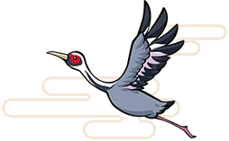

攻略プラン
ゲームの設定（年数・人数）
東日本編・西日本編は、画面上のボタンで選びます。人数で、最初に止まるともらえるカードの表示が変わります。
月ごとの「やること」と、止まらない場所に反映します。3月の次は、年が1つ進んで4月になります。
入れると、買える物件・所持金が独占額に届く駅を出し、手が届かないヒーローは順位を下げます。
カードと作戦
寄り道する駅と、やることの順位の重みを変えます。
寄る駅の順位と「最優先」は、このアプリ独自の目安です（駅の種類・年・所持金・手持ちカードから点数を付けています）。勝率や期待収益を計算したものではありません。
駅の位置とマス数は、公式サイト「まるっと全駅！マップ」の盤面をもとにしています。寄り道は盤面の上で通り道に近い駅から選び、マス数は「たて＋よこ」で数えています。線路のつながりは入っていないので、回り道の分だけ実際のマス数は増えます。動く前にゲーム画面で経路を確かめてください。
年別ガイド 年をタップ
この年にやること 終わったらチェック
気をつけること
ボンビーが出る年
月のカレンダー（4月始まり）
毎年の基本

止まる駅マップ 公式の全駅マップと同じ盤面の位置
エリア（タップで拡大）
駅の種類
駅の数と拠点
駅の位置は公式サイト「まるっと全駅！マップ」の盤面と同じです（1マス単位）。小さなマスは物件駅などで、タップすると駅名と物件が出ます。線路は描いていません。「発」「着」はプランで入れたいまいる駅と目的地です。
歴史ヒーロー 独占額の安い順
仲間にしない
「独占額に届く」は、所持金が独占額以上という意味です。ほかの社長がすでに物件を買っている駅は独占できません。
SS・S・A・BはGame8の評価。「推」はファミ通の攻略ガイドの推奨です。「東西」は同じ人物がもう一方のマップにもいる場合の駅と独占額です。
高収益物件 年間の収益が多い順
「元が取れるまで」は価格÷年間収益（収益率100%なら1年）。決算で収益が入る回数の目安で、イベントやボンビーの影響は入っていません。
買うと得する物件・イベント
カード
いまのおすすめ
手持ちと主なカードの効果
カードの回し方
最初に止まるともらえる駅
カード売り場の品ぞろえ
1〜49年目の品ぞろえです（50年目以降は変わります）。売り場は数年ごとに価格が倍になります。ナイスカード駅は強いカードが出ますが、デビル系や時限爆弾も混ざります。
データの保存と復元
入力はこの端末のブラウザに自動で保存されます。機種変更やブラウザの切り替えに備えて、ファイルに書き出せます。
出典と確認状況
駅の名前・よみ・盤面上の位置・物件名：公式サイト「まるっと全駅！マップ」より。ゲームの画面写真は使用していません。ロゴ・キャラクター画像は「桃太郎電鉄2」公式サイト（KONAMI）の素材を、許可を得て使用しています。見出しの桃・雲・名所の帯・東西のスタンプも公式サイトの素材です。